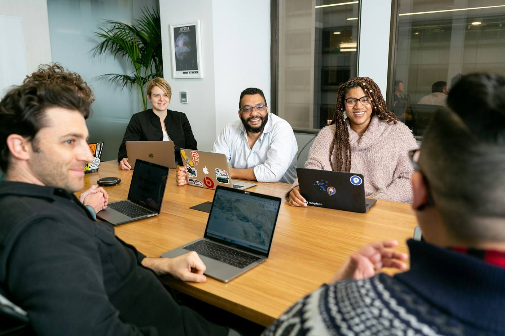
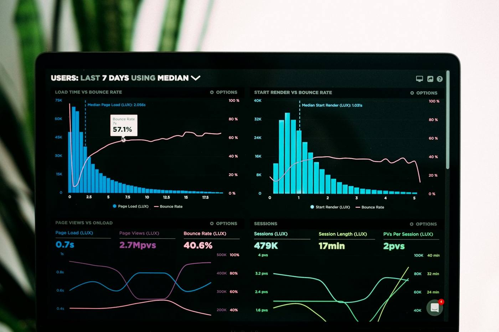
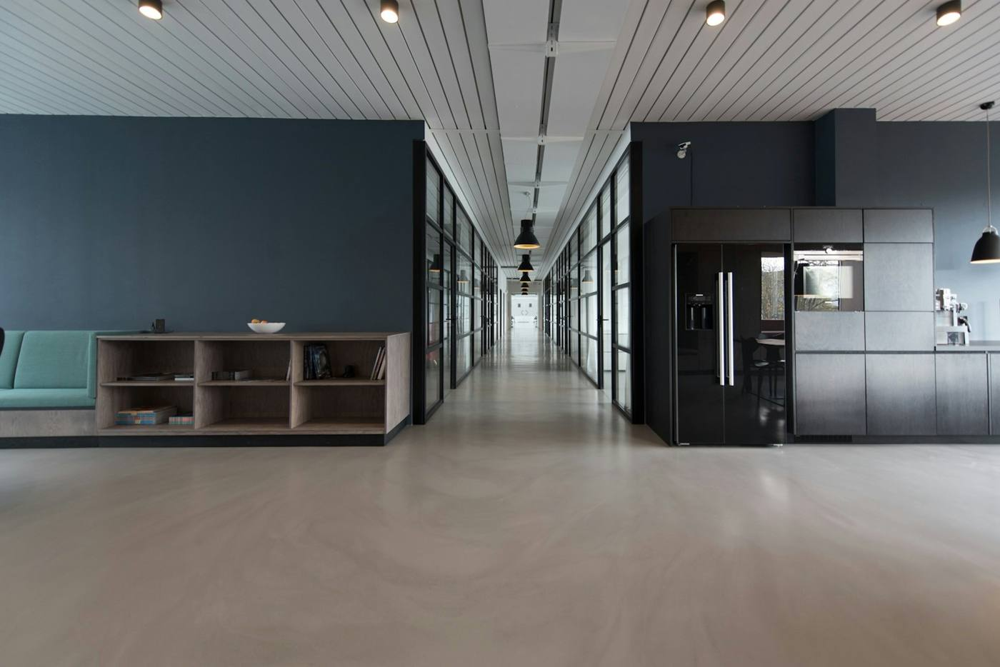

Representative engagements across ERP, ITSM, AI and customer experience, with the challenge, the approach and the outcome.
Examples of the outcomes we design for. Client names withheld.

Four plants ran separate legacy systems, so month-end close took weeks and inventory was invisible. Vendor-neutral selection, then a phased cloud ERP rollout with unified reporting.

ITSM · Financial servicesTicket volumes and manual routing were driving missed SLAs and audit findings.
Migrated to a modern ITSM platform with auto-triage, a self-service portal and audit-ready change flows.
Customer data sat in four tools, so service teams could not see the full history.
Connected CRM, contact center and data to personalize every touchpoint.
 AI · Healthcare
AI · HealthcareClinical teams spent hours on documentation that slowed patient throughput.
Governed AI assistant embedded in existing workflows, with human review built in.

ERP · Public sectorAging finance and HR systems were costly to maintain and hard to audit.
Requirements-led selection and implementation with strong change management.
Network incidents surfaced only after customers called in.
Event correlation and AI-driven routing feeding a single service platform.
 CX · Banking
CX · BankingNew customers abandoned onboarding because it spanned too many steps and systems.
Redesigned the journey and connected CRM, identity and servicing into one flow.
Tell us your goal and we will share the most relevant experience.
Start a conversation